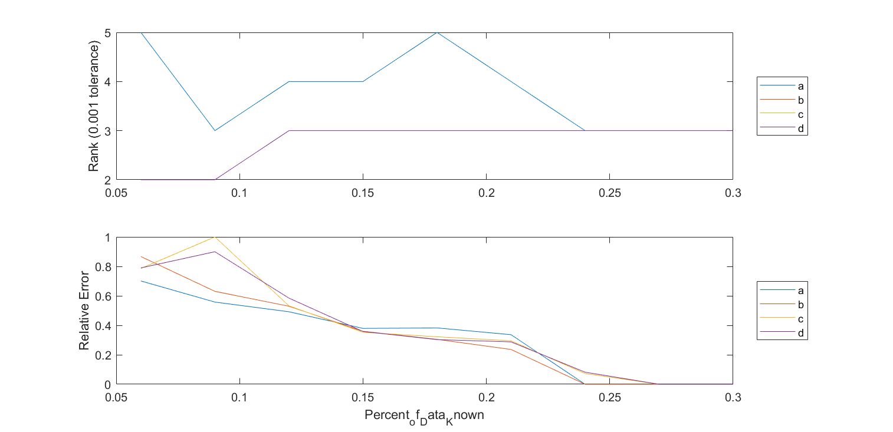
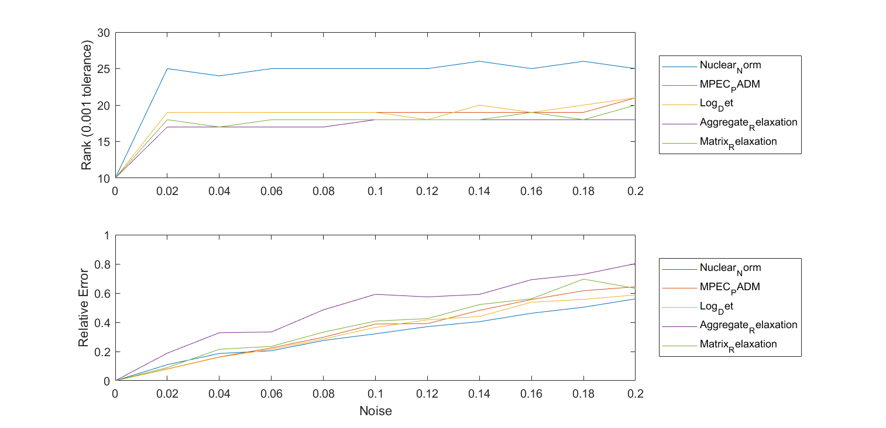
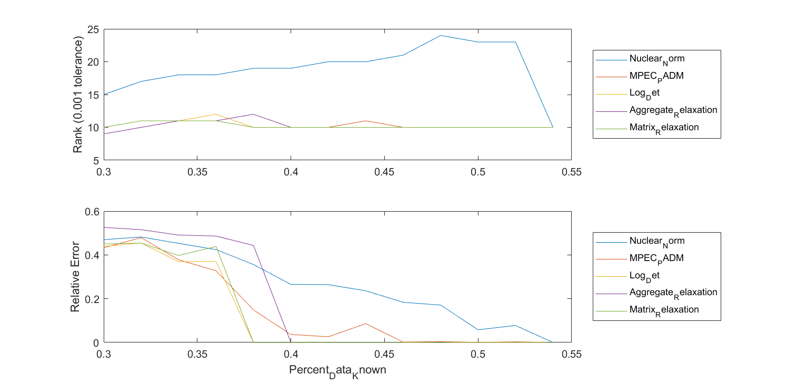
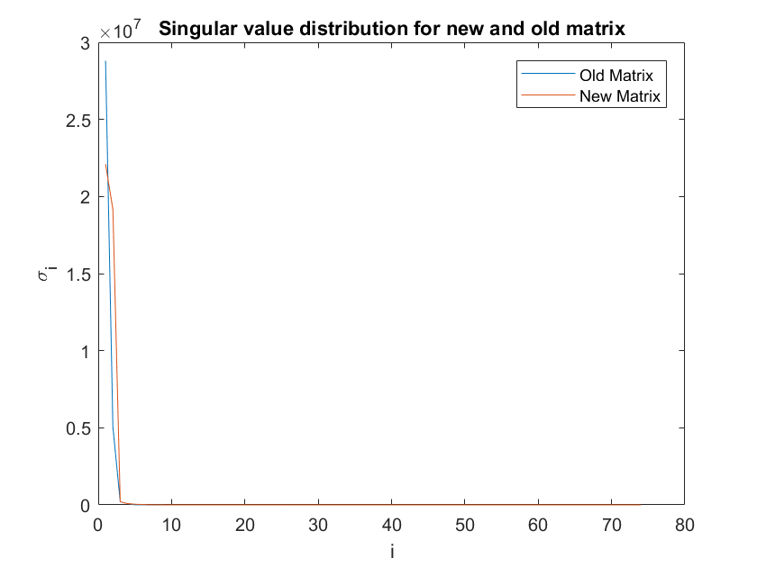

Contents
Showing MM Algorithm is resiliant to choice of lambda.
clear; if exist("Section1.mat", 'file')~=2 d=3; n=30; rankTol=0.1; plist=0.06:0.03:0.3; for i=1:length(plist) [points, distances, A, b]=generateSensorProblem(n,d,plist(i), 0); [ Xmm1, obj ]=matrixRelaxationMM(zeros(n,n), [], [], 1, A, b, [0.01,1]); [ Xmm2, obj ]=matrixRelaxationMM(zeros(n,n), [], [], 1, A, b, [.1,1]); [ Xmm3, obj ]=matrixRelaxationMM(zeros(n,n), [], [], 1, A, b, [1,1]); [ Xmm4, obj ]=matrixRelaxationMM(zeros(n,n), [], [], 1, A, b, [10,0.95]); error(i,1)=calcErrorPoints(Xmm1, points); error(i,2)=calcErrorPoints(Xmm2, points); error(i,3)=calcErrorPoints(Xmm3, points); error(i,4)=calcErrorPoints(Xmm4, points); rank(i,1)=sum(svd(Xmm1)>rankTol); rank(i,2)=sum(svd(Xmm2)>rankTol); rank(i,3)=sum(svd(Xmm3)>rankTol); rank(i,4)=sum(svd(Xmm4)>rankTol); end save("section1.mat") else load("section1.mat") end [rankTable, errorTable]=displayResults(plist, rank, error, {'Percent_of_Data_Known', 'a', 'b', 'c', 'd'});
Rank:
Percent_of_Data_Known a b c d
_____________________ _ _ _ _
0.06 5 2 2 2
0.09 3 2 2 2
0.12 4 3 3 3
0.15 4 3 3 3
0.18 5 3 3 3
0.21 4 3 3 3
0.24 3 3 3 3
0.27 3 3 3 3
0.3 3 3 3 3
Error:
Percent_of_Data_Known a b c d
_____________________ __________ __________ __________ __________
0.06 0.70111 0.86685 0.78601 0.78976
0.09 0.55781 0.63063 0.99983 0.89955
0.12 0.492 0.5294 0.53217 0.58466
0.15 0.37907 0.35954 0.35272 0.35814
0.18 0.38245 0.30484 0.32236 0.30309
0.21 0.33641 0.23615 0.2948 0.28757
0.24 1.2277e-08 1.2317e-08 0.072852 0.081939
0.27 1.614e-08 1.6489e-08 4.1726e-08 1.0159e-06
0.3 5.9803e-08 5.8432e-08 8.2078e-08 4.8776e-07
 Varying Noise
clear; if exist("Section2.mat", 'file')~=2 rankTol=0.001; x=randn(10,50); D=x'*x; noise=0:0.02:0.2; for i=1:length(noise) [A,b] = sampleUniformSymmetric(D,0.55,noise(i)); [ Xnuc ] = nuclearNormPSD(zeros(50,50),[],[],0,A,b, []); [ Xar ] = aggregatedRelaxationPADM(zeros(50,50),[],[],0,A,b, [10, 0.95]); [ Xmpec ] = Rank_MPEC_PADM(zeros(50,50),zeros(1,2500),[0],1,A,b,1e6); [ Xlogdet ] = logDet(zeros(50,50),zeros(1,2500),[0],1,A,b,[]); [ Xmm, obj ]=matrixRelaxationMM(zeros(50,50), [], [], 1, A, b, [1,1]); error(i,1)=norm(Xnuc-D, 'fro')/norm(D, 'fro'); error(i,2)=norm(Xmpec-D, 'fro')/norm(D, 'fro'); error(i,3)=norm(Xlogdet-D, 'fro')/norm(D, 'fro'); error(i,4)=norm(Xar-D, 'fro')/norm(D, 'fro'); error(i,5)=norm(Xmm-D, 'fro')/norm(D, 'fro'); rank(i,1)=sum(svd(Xnuc)>rankTol); rank(i,2)=sum(svd(Xmpec)>rankTol); rank(i,3)=sum(svd(Xlogdet)>rankTol); rank(i,4)=sum(svd(Xar)>rankTol); rank(i,5)=sum(svd(Xmm)>rankTol); end save("section2.mat") else load("section2.mat") end [rankTable, errorTable]=displayResults(noise, rank, error, {'Noise', 'Nuclear_Norm', 'MPEC_PADM', 'Log_Det', 'Aggregate_Relaxation', 'Matrix_Relaxation'});
Rank:
Noise Nuclear_Norm MPEC_PADM Log_Det Aggregate_Relaxation Matrix_Relaxation
_____ ____________ _________ _______ ____________________ _________________
0 10 10 10 10 10
0.02 25 19 19 17 18
0.04 24 19 19 17 17
0.06 25 19 19 17 18
0.08 25 19 19 17 18
0.1 25 19 19 18 18
0.12 25 19 18 18 18
0.14 26 19 20 18 18
0.16 25 19 19 18 19
0.18 26 19 20 18 18
0.2 25 21 21 18 20
Error:
Noise Nuclear_Norm MPEC_PADM Log_Det Aggregate_Relaxation Matrix_Relaxation
_____ ____________ __________ __________ ____________________ _________________
0 6.3523e-07 5.2657e-05 1.9961e-07 1.0093e-09 2.0943e-07
0.02 0.10987 0.08046 0.078879 0.18858 0.089774
0.04 0.18647 0.16274 0.16081 0.32861 0.2155
0.06 0.20516 0.2248 0.21569 0.33387 0.23502
0.08 0.27554 0.29791 0.28579 0.48537 0.33265
0.1 0.32137 0.38827 0.3655 0.59187 0.40852
0.12 0.37022 0.39092 0.41681 0.57413 0.42548
0.14 0.40449 0.48196 0.44007 0.59137 0.52167
0.16 0.46216 0.55606 0.53771 0.69215 0.56132
0.18 0.50353 0.61635 0.55689 0.7289 0.69607
0.2 0.56066 0.64347 0.5875 0.80201 0.63268
 Redoing experiement from last week with better parameters for Aggregatged Relaxation
if exist("Section3.mat", 'file')~=2 rankTol=0.001; x=randn(10,50); D=x'*x; plist=[0.3:0.02:0.6]; for i=1:length(plist) [A,b] = sampleUniformSymmetric(D,plist(i), 0); [ Xnuc ] = nuclearNormPSD(zeros(50,50),[],[],0,A,b, []); [ Xar ] = aggregatedRelaxationPADM(zeros(50,50),[],[],0,A,b, [10, 0.95]); [ Xmpec ] = Rank_MPEC_PADM(zeros(50,50),zeros(1,2500),[0],1,A,b,1e6); [ Xlogdet ] = logDet(zeros(50,50),zeros(1,2500),[0],1,A,b,[]); [ Xmm, obj ]=matrixRelaxationMM(zeros(50,50), [], [], 1, A, b, [1,1]); error(i,1)=norm(Xnuc-D, 'fro')/norm(D, 'fro'); error(i,2)=norm(Xmpec-D, 'fro')/norm(D, 'fro'); error(i,3)=norm(Xlogdet-D, 'fro')/norm(D, 'fro'); error(i,4)=norm(Xar-D, 'fro')/norm(D, 'fro'); error(i,5)=norm(Xmm-D, 'fro')/norm(D, 'fro'); rank(i,1)=sum(svd(Xnuc)>rankTol); rank(i,2)=sum(svd(Xmpec)>rankTol); rank(i,3)=sum(svd(Xlogdet)>rankTol); rank(i,4)=sum(svd(Xar)>rankTol); rank(i,5)=sum(svd(Xmm)>rankTol); end save("section3.mat") else load("section3.mat") end [rankTable, errorTable]=displayResults(plist, rank, error, {'Percent_Data_Known', 'Nuclear_Norm', 'MPEC_PADM', 'Log_Det', 'Aggregate_Relaxation', 'Matrix_Relaxation'});
Rank:
Percent_Data_Known Nuclear_Norm MPEC_PADM Log_Det Aggregate_Relaxation Matrix_Relaxation
__________________ ____________ _________ _______ ____________________ _________________
0.3 15 10 10 9 10
0.32 17 11 11 10 11
0.34 18 11 11 11 11
0.36 18 11 12 11 11
0.38 19 12 10 12 10
0.4 19 10 10 10 10
0.42 20 10 10 10 10
0.44 20 11 10 10 10
0.46 21 10 10 10 10
0.48 24 10 10 10 10
0.5 23 10 10 10 10
0.52 23 10 10 10 10
0.54 10 10 10 10 10
Error:
Percent_Data_Known Nuclear_Norm MPEC_PADM Log_Det Aggregate_Relaxation Matrix_Relaxation
__________________ ____________ __________ __________ ____________________ _________________
0.3 0.46959 0.43309 0.43917 0.52572 0.45007
0.32 0.48191 0.47888 0.45466 0.51525 0.45413
0.34 0.45284 0.37786 0.36928 0.49078 0.39735
0.36 0.42431 0.32758 0.37019 0.48622 0.43863
0.38 0.35609 0.14883 8.1674e-08 0.44327 6.3682e-08
0.4 0.2652 0.036499 1.7467e-07 9.2369e-10 1.7067e-07
0.42 0.26419 0.026035 6.1505e-08 1.2125e-09 5.9022e-08
0.44 0.23597 0.085947 1.7391e-07 2.385e-09 4.091e-07
0.46 0.18353 0.0017823 5.1753e-08 1.0846e-10 5.0941e-08
0.48 0.17071 0.0036566 6.1958e-08 7.1408e-10 5.8635e-08
0.5 0.057829 0.00049512 2.1978e-07 4.7494e-10 2.0918e-07
0.52 0.077712 0.0027477 1.3939e-08 1.2057e-10 1.3716e-08
0.54 3.5201e-08 5.4034e-05 2.7562e-07 4.7793e-09 2.6385e-07
 A slightly different formulation for Matrix Completion with PMU data
Lets compare 2 methods: SVT and Matrix Relaxation, and lets try to seperate the real and imaginary parts of the entries, yeah, i like that.
Here's exactly how im changing this matrix:
clear;
load("pmuData.mat")
newData=[real(data), imag(data)];
Heres the singular values of the matrix with and without seperating the real and imaginary parts
figure() plot(svd(data)) hold on plot(svd(newData)); xlabel("i") ylabel("\sigma_i") legend(["Old Matrix", "New Matrix"]) title("Singular value distribution for new and old matrix")
To be more quantitative, let's show that both matricies are approximately rank 10. This is important because now we have a 600x74 rank 10 matrix instead of a 600x37 rank 10 matrix. The rank to column ratio is lower now.
[u,s,v]=svds([real(data), imag(data)], 10); fprintf("Error in rank 10 approximation for seperating real and imag parts %f \n", norm([real(data), imag(data)]-u*s*v', 'fro')/norm([real(data), imag(data)], 'fro')) [u,s,v]=svds([data], 10); fprintf("Error in rank 10 approximation for original formulation %f \n", norm(data-u*s*v', 'fro')/norm(data, 'fro'))
Error in rank 10 approximation for seperating real and imag parts 0.000059 Error in rank 10 approximation for original formulation 0.000021
Comparing Result
Lets try to look at how well we can do MC on both of these matricies, I'm hoping it does better on this new fomulation.
To make it a good example, what im going to do is sample the whole matrix, and then reconstruct the matrix based off of that so that im sampling the same stuff, and i'm not sampled the real but not imaginary part of a single entry.
if exist("Section4.mat", 'file')~=2 data=precondition(data); dataReal=[real(data), imag(data)]; [ M,b,row,col ] = sampleUniform( data,0.5 ); rowReal=[row, row]; colReal=[col, col+37]; bReal=[real(b), imag(b)]; [p,m]=size(data); X=svt(row, col, b,600, 37, 100, .1, 0.0001, 200); Xreal=svt(rowReal, colReal, bReal, 600, 74, 100, .1, 0.0001, 200); save("section4.mat") else load("section4.mat") end fprintf("Error in new formulation: %f \n", norm(Xreal-dataReal, 'fro')/norm(dataReal, 'fro')) fprintf("Error in old formulation: %f \n", norm([real(X), imag(X)]-dataReal, 'fro')/norm(dataReal, 'fro'))
Error in new formulation: 0.093794 Error in old formulation: 0.133404
Cool!! It works better!!! This makes a lot of sense. I think this better takes advatage of the low dimensionality of the data. I wonder how this effects the coherence
fprintf("Coherence of new formulation: %f \n", coherence(data)) fprintf("Coherence of old formulation: %f \n", coherence(dataReal))
Coherence of new formulation: 0.978975 Coherence of old formulation: 0.992289
These are both pretty awful, but I suppose this is a little bit better.